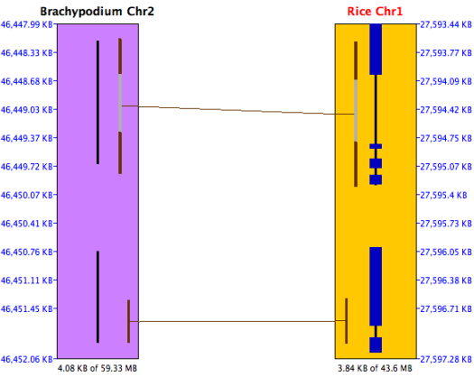
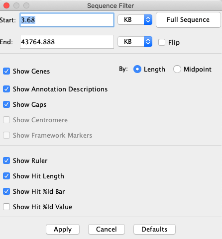
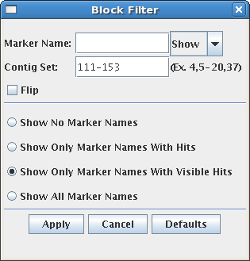
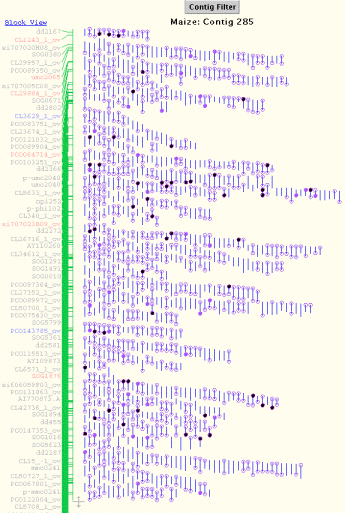
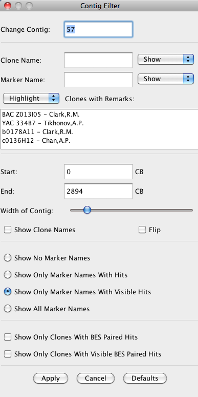

|
|
SyMAP Sequence-FPC synteny |


|
|
|
|||
Contents
2D Display | Go to top |
Below is a image depicting an FPC-to-sequence comparison for Maize FPC (chromosome 3) to Rice (chromosome 1) to Sorghum (chromosome 3). Note that rice chr1 is the "reference" chromosome, hence is placed in between the others.

The alignment window displays "tracks" (drawn as rectangles) of sequence information, showing synteny "hits" (drawn as lines) between tracks.
There are three types of tracks:
- Sequence Track - sequenced chromosome or draft sequenced contig.
- FPC Contig Track - single contig from FPC map.
- FPC Block Track - group of contigs from FPC map.
Control Panel and Navigation | Go to top |
{kind=link}
History (Home, <, >) SyMAP retains a record of the prior views (like a web browser). The history navigation back (<) and forward (>) buttons allow you to move back and forth through the previous views. The Home button returns to the initial view.
Zoom Buttons (-, +) The zoom buttons allow for quickly expanding and narrowing the view region. The minus (-) button shrinks the view region by 50%, keeping the same center, while the plus (+) button doubles the view region, again keeping the same center.
Scale Button The Scale button (right of +) resizes the tracks so that they are in the same scale (base pairs per pixel) as the reference sequence track in the view.
Mouse Function Selector This drop-down selector assigns a function to the mouse's left button click and drag actions:
- Base View - open the base alignment view for the selected region.
- Zoom - zoom to the selected region.
- Zoom All - zoom the track to the selected region and all other tracks with hits in the region.
Help Opens this manual in a web browser.
Additional navigation:
| Resize Track | Drag bottom of track | Position mouse at bottom of track (resize cursor appears), hold down left mouse button, and move mouse. |
| Scroll Track | Mouse wheel | Position mouse over track and use mouse wheel. |
| Filter | Right mouse button | Position mouse over track or white space between tracks, and click right mouse button. |
Tracks in Main Panel | Go to top |
Sequence Track
A Sequence track represents a contiguous piece of sequenced DNA, typically for a sequenced chromosome. The sequence length and the coordinates of the displayed region are indicated above and below the track.Annotation data of the following types may be loaded into SyMAP and displayed. (Note that display colors can be changed.)
| Annotation Type | How Displayed |
| Gaps | Red band across the chromosome |
| Centromere | Blue "X" across the chromosome |
| Predicted genes and exons | Annotation strip in center of chromosome (see image ) |
| Genetically anchored ("Framework") markers (FPC maps only) | See images below |
The sequence information displayed can be configured via the Sequence Filter by clicking the Sequence Filter button above the sequence track, or by right-clicking the mouse over the sequence track.
The example below shows a sequence-to-sequence alignment.
- The black lines down the center of the Brachypodium chromosome indicate predicted genes; this annotation file did not include exons. The black lines with heavier blue bars interspersed down the center of the rice chromosome indicate exon/intron predictions; the annotation file included both genes and exons.
|
 |
{kind=link}
Sequence Filter | Go to top |
|
Start and End
The positions of the sequence display can be set via the
corresponding text boxes.
The units of the values entered can be selected from the accompanying drop down menus
(BP, KB, MB, GB).
Full Sequence Sets the start and end positions of the sequence display to encompass the whole chromosome. Flip Reverses the orientation of the sequence track. Show Genes Enables/disables the display of gene/exon annotations along the sequence. Show Framework Markers Typically genetic markers or radiation hybrid markers. This option enables/disables the display of framework markers (drawn as solid green rectangles) along the sequence. |  |
{kind=link}
Show Gaps Enables/disables the display of sequence gaps (drawn as solid red rectangles) along the sequence.
Show Centromere Enables/disables the display of the centromere (drawn as a cyan "X") on the sequence.
Show Ruler Enables/disables the display of the sequence ruler along the right side of the sequence.
Show Description for Annotations Enables/disables the display of the annotation descriptions along the right side of sequence. NOTE: this only works if you are zoomed in close enough that they can clearly be displayed.
Show Hit Score Line Enables/disables the display of the score line next to each hit along the sequence. The length of the line represents the magnitude of the % Identity value for the hit.
Show Hit Score Value Enables/disables the display of the score value next to each hit along the sequence. The score value corresponds to the % Identity value for the hit.
Show Hit Length Enables/disables the display of the hit length line next to each hit along the sequence. The hit length line denotes the start and end points of the hits relative to the sequence (may not be visible for tiny hits).
FPC Block Track | Go to top |
|
A Block track shows a block of FPC contigs, which is simply
a list of contigs arranged end-to-end. This track
type allows alignments to be displayed which stretch across more than one
FPC contig. Individual clones are not shown in a
block track, but markers are shown, and hits from
both clones and markers to neighboring tracks are shown.
Clicking on one of the contig rectangles of a block track brings up the contig track display for that particular contig. The filter options that are shared with the Contig track are maintained. Block Title A Block track may simply be a group of contigs, in which case the block title is the project name (e.g. "Maize"). Or a block track may contain a synteny block, identified by SyMAP software, in which case the Block Title includes the Synteny Block Number. The Synteny Block Number consists of three fields: Project1Chromosome.Project2Chromosome.BlockIDIn the screenshot above, the Synteny Block Number "6.1.1" refers to Maize Chromosome 6 mapped to Rice Chromosome 1, synteny block #1 of this pairing. | 
|
Filter | Go to top |
|
Marker Name Allows control over which marker names/hits to display.
A marker is specified by entering a search string for the marker name and
selecting the appropriate setting in the show/hide drop-down. A wild-card
character "*" may be used at either end, e.g. "*SSR*".
Show No Marker Names Hide all marker names. Show Only Marker Names With Hits Only show the names of markers which have a hit somewhere along the chromosome currently being viewed. These hits may not be visible if the view has been zoomed. Show Only Marker Names With Visible Hits Only show the names of markers which have hits visible in the current view. |  |
{kind=link}
Show All Marker Names Display the names of all markers on the block, regardless of hits.
Contig Set Allows the user to define which contigs to display. Multiple contigs and ranges may be specified, for example "1,2,3,5-20,31,47" will display contigs 1,2,3,31,47, and all contigs between 5 and 20. The contigs are displayed in the order given.
Flip Flip the entire block, reversing the display order of the contigs.
FPC Contig Track | Go to top |
|
The Contig track shows a detailed view of the clones
and markers that make up the selected contig. Hits from
clones to neighboring tracks are shown as lines going to the clones. If the
hit is from a BES on the clone, the line is drawn to one end of the clone, while
if the hit is from a marker attached to that clone, the hit is drawn to the middle
of the clone. Because a marker may be attached to many clones, a hit from
a particular marker is drawn from a red "marker join dot" to the side of the
contig, and the join dot is then connected to each of the clones to which
the marker is attached.
Since a contig track is usually accessed by choosing a contig from a block track, a Block View link has been provided at the top of the contig track which will return to the previous block view. The filter options that are shared with the Block track are maintained when using this link. The contig information displayed can be controlled via the Contig Filter. |  |
{kind=link}
Clones are represented as short vertical lines. Dots on the ends of the line represent a BES.
| Dot Color | Meaning | |
| open | the BES has no hit | |
 | light purple | the BES has a hit |
 | black | the BES has a hit within a block and has no hits showing |
 | dark purple | the BES has a hit within a block and has a hit showing |
 A green line in the middle of the clone going towards
another track is a marker hit.
A green line in the middle of the clone going towards
another track is a marker hit.
 Gold-colored clones are clones having both BES hits
with the same orientation. This can indicate an inversion breakpoint within the clone.
Gold-colored clones are clones having both BES hits
with the same orientation. This can indicate an inversion breakpoint within the clone.
Moving the mouse over a clone will give a description in the status bar and highlight the clone and its hits. Moving the mouse over a clone's BES gives more information on that BES's hits.
The clone information displayed can be configured via the Contig Filter by clicking the Contig Filter button above the contig track, or by right-clicking the mouse over the contig track.
Markers are shown next to Block tracks and Contig tracks. Moving the mouse over a marker name will highlight the corresponding hits. Clicking on a marker's name will keep the marker highlighted until another marker is clicked or the same marker is clicked again.
Markers are colored based on their hit information and if they are shared.
| Not Shared | Shared | |
| No Hits | ||
| Hits | ||
| Current Hits |
| Select Marker | Left mouse button | position mouse over marker and click left mouse button. |
| Highlight Marker/Clone | position mouse over marker/clone. |
BES Hit is signified by a purple line between two tracks.
Marker Hit is signified by a green line between tracks. If a marker of the same name can be found on another track in the view, the marker hit will be blue. When viewing a contig in the Contig view, the hits from the same marker on different clones are joined together at a red dot. Moving the mouse over the red dot will highlight the marker's name.
Clone Fingerprint Hit is signified by a black line between two tracks. Contig Filter allows the user to select the type of information shown for the currently visible contig. It augments the Block Filter with options specific to clones. It is accessed via the Contig Filter button above the contig track, or by right-clicking the mouse over the contig track.
|
Change Contig a quick way to change the currently viewed contig.
Clone Name: The Clone names and hits can be shown, hidden, or highlighted through the Clone Name text box. A clone name can be searched on by entering a search string for the clone name and choosing to show, hide, or highlight those clones that match it. A wildcard "*" may be used at the beginning or end. Clone with Remarks: Clones can be filtered or highlighted based on the remarks attached to them in the FPC file. For convenience, all remarks present in the contig are listed in the selection box, and one or more may be selected for filtering (to select multiple, hold down the Control key while clicking). Clones containing at least one of the remarks selected are filtered or highlighted based on the option selected above the remarks selection box. Start and End The portion of the contig to be displayed can be adjusted through the start and end text boxes. The desired start and end points are entered in CB units. Width of Contig The width of the contig can be adjusted using the slider. Show Clone Names The user can choose to show clone names by selecting this check box. The width of the contig can than be adjusted to give sufficient space for the names. Flip the Contig Reverse the order in which the clones are displayed. |  |
{kind=link}
Show Only Clones with current BES paired hits Show only those clones for which both BES have a hit showing in the current view.
Show Only Clones with BES paired hits Show only those clones for which both BES have hits (filled-in circles).
Hit Filter | Go to top |
- Marker hits
- BES hits
- Synteny hits, i.e. those found by SyMAP analysis to be part of a synteny block.
- Gene hits, i.e. hits to an annotated gene region.
|
E-Value: Hit types can be filtered by E-Value using the slider. When the slider is all the way to the left, all hits are shown. % Identity: Hit types can be filtered by percent identity using this slider. Show Only Shared Marker Hits: This option applies to a 3-track (FPC/Seq/FPC) view. When selected, only marker hits for markers that are shared between the two FPC tracks are shown. Show Marker Join Dot: The join dot is the red dot connecting all of the clone hits of a marker. This option allows the user to show the marker hits without the join dot. When this option is selected, marker hits will be drawn directly from the centers of the clones to hit locations on the sequence. This can make synteny more visible, but it also adds some redundant lines for markers which are attached to many clones. | 
|
Show Only Synteny Hits: Shows only hits that are part of a synteny block.
Show Only Hits to Genes: Show only hits which intersect a gene annotation.
Show Only Non-Gene Hits: Show only hits which do not intersect a gene annotation.
Show All Hits: shows all known hits.
Base View | Go to top |
{kind=link}
A base view of the hits along a sequence track can be brought up by dragging the mouse along the sequence and releasing when the desired range is highlighted. The range selected is increased if necessary to show the full length of the markers and BESs involved. If the user selected range contains blank areas (no marker or BES hits) the range is reduced to include only the genes with hits. There is a maximum range of 50Kb that can be selected for the base view, so zooming in on an area first may be necessary.
If there are multiple hits in the selected region, than the base view of those hits appears in a new dialog. This view consists of a ruler along the top showing the area of the sequence covered, the hits, and the genes.
Hits
Hits are displayed as lines with an arrow on one end showing the direction of the hit.
Marker hits are green, while BES hits are purple.Clicking on a hit brings up the hit's
BLAST view in the bottom of the dialog. The hit presently shown in the BLAST view is
shown in gray. The full length of the marker/BES is shown as a grey dotted line above
the hits.A vertical red line along a hit represents a mismatch . A vertical green line
along a hit represents a deletion. An arrow pointing down (i.e. 'v') along a hit
represents an insertion.
Genes
Annotated genes are displayed below the hits. Exons are represented by a blue box, and
the leftmost or rightmost exon box will have an arrow tip indicating whether the gene
is on the + strand (right-pointing) or - strand (left-pointing) relative to the
sequence. The system attempts to expand the view to show the full gene that has
hits. Genes that overlap this gene will be partially shown.
FPC Caveats | Go to top |
- If contigs are not anchored to chromosome, they will be on chromosome 0. If chromosome 0 is part of any blocks, they are only be shown on the block display.
- The block display only shows the FPC chromosomes aligned to the sequence chromosomes; the reverse does not work.
- The Colors (see Color Wheel on top right of 2D display) can only be changed on the
Chromosome Explorer , but any changes there will also be reflected when viewing a 2D display from theDot Plot orBlock View .